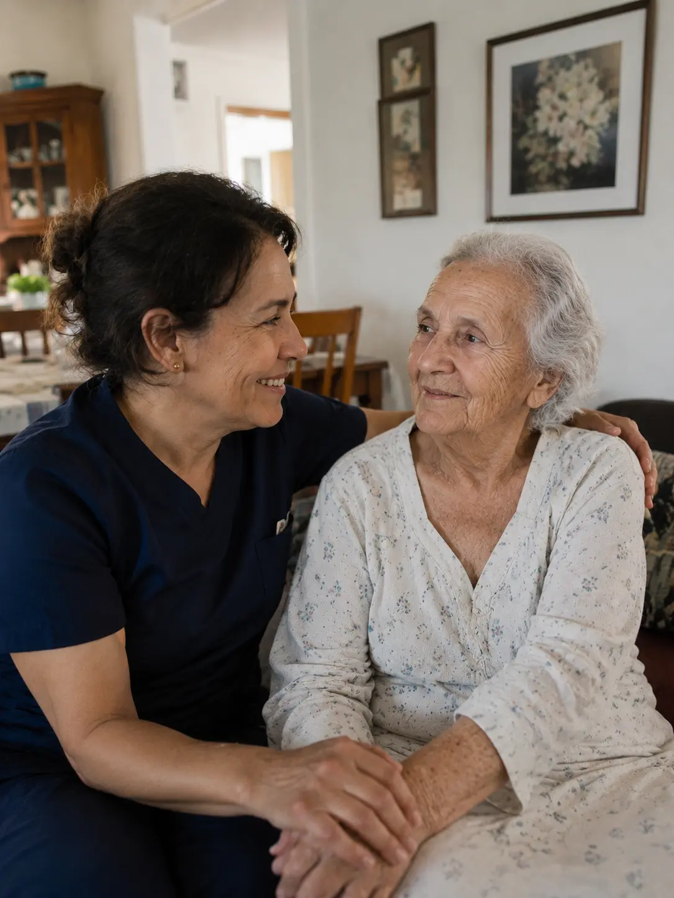

Contratar uma cuidadora parece a decisão mais natural do mundo. Mas a realidade operacional e emocional do cuidado domiciliar é muito mais complexa do que a maioria das famílias imagina antes de começar — e entender isso com antecedência muda tudo.

Muitas famílias chegam até a SAFE ILPIS depois de meses tentando fazer o cuidado domiciliar funcionar. A pergunta frequente é: "Por que é tão difícil?"
A resposta honesta é: porque o desafio do home care raramente é encontrar uma profissional. O desafio é a compatibilidade, a continuidade e a gestão emocional e operacional de um processo que nunca termina.
Antes de qualquer decisão sobre home care, vale entender o grau de dependência da pessoa — porque ele define diretamente o tipo de cuidado necessário e se uma cuidadora em casa é realmente suficiente para a situação atual.
Adaptar uma nova pessoa à rotina de cuidado leva semanas — e às vezes não funciona, mesmo com boa vontade dos dois lados.
A família precisará gerenciar conflitos, expectativas e a relação afetiva entre cuidadora e familiar idoso — continuamente.
Uma pessoa estranha passa a conviver no espaço doméstico. A dinâmica da casa muda — e isso exige adaptação de todos.
Uma cuidadora não substitui uma equipe. Em episódios noturnos, quedas ou crises cognitivas, o suporte isolado tem limitações claras.
Contratação formal significa FGTS, INSS, férias, 13.º e vale-transporte. Informal cria riscos jurídicos e não protege ninguém.
A supervisão, a coordenação e a responsabilidade emocional continuam sendo da família — mesmo com cuidadora contratada.
O que a SAFE ILPIS frequentemente observa: famílias que chegam emocionalmente esgotadas não chegaram ao limite por falta de cuidadora. Chegaram por falta de estrutura. A cuidadora resolve uma parte — mas cuidado sustentável exige um ecossistema, não apenas uma pessoa.
Não existe "cuidadora ruim" por princípio. Mas a diferença entre uma profissional com anos de experiência e uma iniciante é operacionalmente significativa — especialmente em graus de dependência mais elevados.
O que a experiência acumulada muda na prática
O que exige mais tempo e supervisão
Importante: iniciantes podem se tornar excelentes cuidadoras com o tempo. O problema é que famílias em situação de alta demanda precisam de experiência desde o início — especialmente quando a pessoa apresenta Grau II ou III de dependência.
O setor de cuidado domiciliar tem um dos maiores índices de rotatividade profissional do mercado de trabalho informal no Brasil. Famílias que terceirizam a busca por agências sem critério experimentam ciclos repetitivos de contratação, adaptação e substituição — que têm um custo emocional alto para todos, especialmente para a pessoa idosa.
A maior parte das saídas não acontece por incompetência — mas por incompatibilidade de expectativas, estrutura insuficiente e fatores que famílias raramente percebem com antecedência.
Quando o ciclo de rotatividade se torna frequente, muitas famílias percebem que a alternativa de uma modalidade de Day Use ou hospedagem oferece mais estabilidade e continuidade do que o cuidado domiciliar isolado.
A SAFE ILPIS mantém uma rede de profissionais com histórico operacional real — avaliadas em parceiros, com registro de comportamento, adaptação e continuidade. Não é um marketplace. É uma rede de suporte baseada em referências verificadas.
Como funciona a indicação: antes de qualquer nome, a SAFE ILPIS avalia o perfil da pessoa, o grau de dependência, a rotina domiciliar e as necessidades específicas. O objetivo é compatibilidade real — não apenas disponibilidade.
"Cuidar não é contratar alguém.— Equipe SAFE ILPIS
É construir uma estrutura sustentável para o envelhecimento de quem você ama."
Muitas famílias assumem que home care é automaticamente mais barato. Mas quando todos os custos são contabilizados honestamente, a diferença frequentemente desaparece — e o que muda é a estrutura entregue, não o preço.
Importante: esse comparativo não é uma defesa automática dos residenciais. Para muitas situações — especialmente em graus de dependência leve — o cuidado domiciliar bem estruturado pode ser a escolha mais adequada. A decisão deve considerar a pessoa, não apenas os números. Leia também sobre os custos reais de operar uma ILPI para entender por que preços muito baixos em residenciais também são problemáticos.
Ao longo dos anos de trabalho com residenciais e famílias, a SAFE ILPIS construiu um conhecimento operacional profundo sobre profissionais que trabalharam em parceiros avaliados. Não indicamos quem está disponível — indicamos quem tem histórico verificado.
Histórico operacional — avaliações de comportamento profissional em parceiros reais
Compatibilidade verificada — indicação baseada no perfil da pessoa, não apenas na disponibilidade
Suporte pós-indicação — acompanhamento da adaptação e suporte à família nas primeiras semanas
Plano de cuidado integrado — quando necessário, combinamos cuidadora domiciliar com Day Use para maior sustentabilidade
Orientação trabalhista — ajudamos a entender a formalização correta e os riscos do vínculo informal
Cuidado para o cuidador — suporte emocional para o familiar que carrega a responsabilidade do cuidado
O cuidado completo vai muito além de contratar uma profissional. Pessoas idosas precisam também de sociabilização, estimulação cognitiva, rotinas estáveis e uma rede de apoio que uma única cuidadora não consegue fornecer sozinha. É por isso que a SAFE ILPIS desenvolveu Planos de Cuidado Personalizados que combinam o melhor de cada modalidade.
Cada situação é diferente. A melhor estrutura depende do grau de dependência, do orçamento disponível e da dinâmica da família. Uma conversa de 20 minutos já clareia o caminho — e é totalmente gratuita.
Quero falar com um especialista SAFE✓ Gratuito · ✓ Sem compromisso · ✓ No seu tempo
A SAFE ILPIS ajuda a montar essa estrutura — combinando profissionais, residenciais e planos de cuidado personalizados para que sua família não precise fazer esse caminho sozinha.
Quero falar com um especialista SAFE